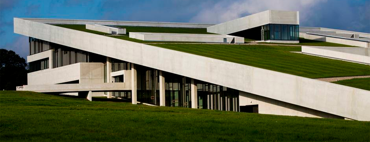

Kendetegnende arkitektur for Aarhus er blandt andet Aros, Moesgaard og Rådhuset. Specielt er Aros blevet noget af det mest kendetegnende arkitektur for Aarhus på kort tid efter, at Your rainbow panorama kom til i maj 2011. Your rainbow panorama er et kunstværk lavet af den dansk/islandske kunstner Olafur Eliasson. Han har formået at skabe en cirkelformet 150 meter lang og tre meter bred rundgang med 360 graders udsyn igennem glas i alle regnbuens farver på toppen af Aros, som symboliserer en regnbue over Aarhus. Det i sig selv får Aros til at være kendetegnende arkitektur i Aarhus. Aros er tegnet af arkitektfirmaet Schmidt Hammer Lassen. Aros blev opført fra 2001-2004 og er på 17.700 m².
Moesgaard museum
Med det skrånende tag med græs og mos på går Moesgaard Museum i et med landskabet og gør museet til en arkitekturperle i sig selv. Efter Moesgaard Museum tog den nye museumsbygning i brug, er besøgstallet syvdoblet til over en halv million årlige besøgende. I de 16.000 m2 skaber Moesgaard museum rum til arkæologiske og historiske udstillinger. Da arkitekturen i udstillingsrummene er forholdsvis anonyme, gør det, at de skaber de perfekte rammer til de skiftende udstillinger. Moesgaard Museum er tegnet af arkitektfirmaet Henning Larsen. De har tegnet museet med en vision om, at Moesgaard er mere end et museum. Det er et værested.

Aarhus rådhus
Aarhus Rådhus er en moderne og funktionalistisk bygning og et ikon for Aarhus. Rådhuset er beklædt med norsk marmor, og er udtryk for dansk design og arkitektur, når det er bedst. Aarhus Rådhus er tegnet af den internationalt kendte arkitekt Arne Jacobsen og Erik Møller og blev opført i 1937 - 1942. I 1994 blev bygningen fredet, og er i januar 2006 medtaget i Kulturkanonen for arkitektur. Rådhuset har et areal på 19.380 m². Tårnet er 60 meter højt, uret på tårnet har en diameter på 7 meter og den lille viser er 2,5 meter og den store 3 meter lang. Tårnet er i dag et Aarhus’ vartegn, men det var fra start tegnet uden tårn, men arkitekterne måtte tilbage til tegnebrættet efter store protester fra borgerne i Aarhus, der ikke mente, at et rådhus kunne være uden et tårn. I dag fremstår Aarhus Rådhus som en smuk patineret bygning, der i overgangen til en mere regional tolkning af den modernistiske arkitektur, og er et eksempel på den tidlige funktionalisme med en særlig nordisk følsomhed.